ITERATION 1
Give the canvas more room
Raised
The developers found the embedded canvas too cramped.
Changed
I added a way to maximize the canvas to full screen.
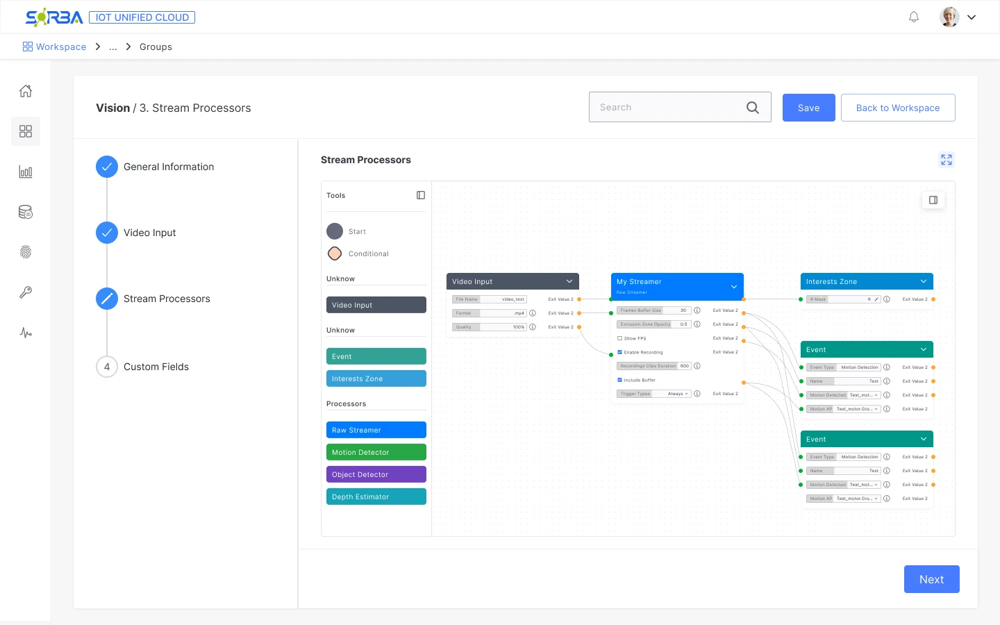
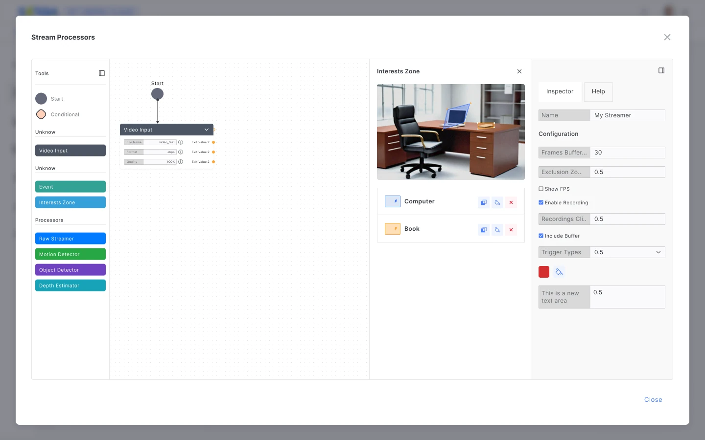
Case study · Sorba.ai · IoT Unified Cloud
I designed a node canvas inside a guided setup, so people configuring Vision could see how video inputs, processors and events connect.
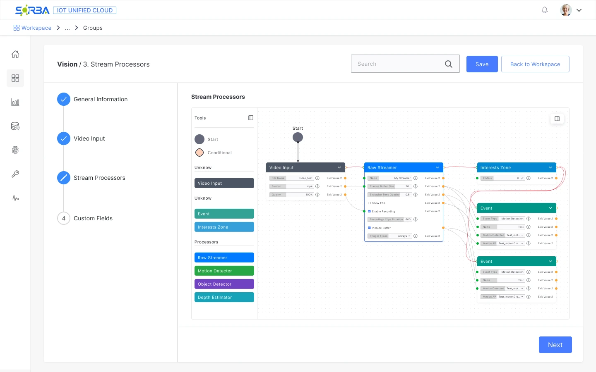
The challenge
A technical setup flow that hid how the pipeline connected.
My design
A guided setup with a node canvas and settings in context.
The outcome
Launched in four months, with positive feedback relayed by sales and support.
Context
IoT Unified is Sorba’s platform for managing IoT infrastructure. Its Vision node connects video sources, processes the stream and defines what the system should detect.
The task was to connect a video source, choose how to process it and configure detection. The old setup exposed technical settings before it showed how those parts fit together.
The project manager defined the requirements together with the heads of the development department. I worked with developers on implementation and feasibility. Sales and support later relayed client feedback. I did not have direct access to end users, so their roles, experience levels and day-to-day difficulties were not validated through user research.
Problem
The previous setup used a long wizard of technical forms. Camera configuration alone had five sub-steps before Analytics and Custom Fields. Fields such as FPS, thresholds and hardware arguments appeared before users could see how the processing stages connected.
Before · a wizard of forms
FPS, thresholds and hardware arguments came before users could see how the stages connect.
The pipeline had to be inferred across form steps.
After · guided setup around one canvas
The whole pipeline is visible as connected nodes.
Settings open beside the selected node.
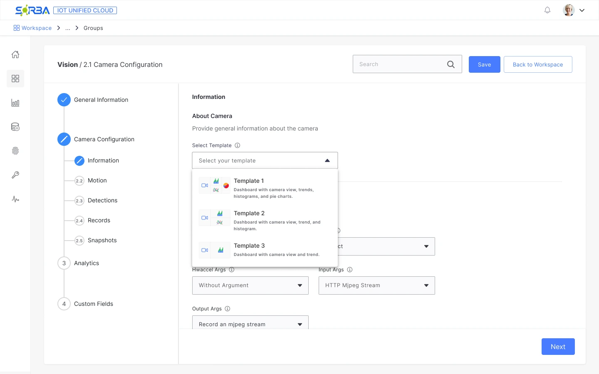
Before: camera configuration
Camera settings and technical arguments spread across form steps.
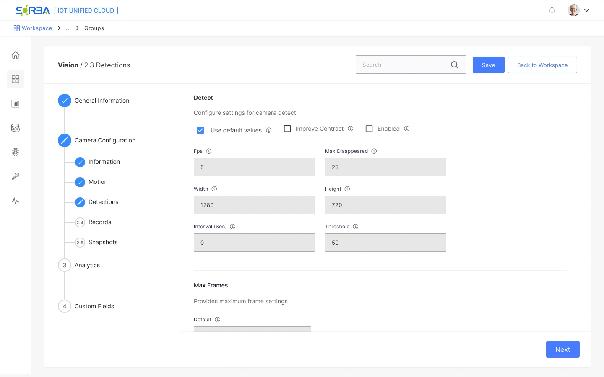
Before: detections
Processing parameters presented as isolated numeric fields.
Before
A fixed sequence of forms; camera setup alone took five sub-steps.
Technical fields up front: FPS, thresholds, hardware arguments.
Pipeline structure had to be inferred across form steps.
Canvas design
One canvas where the whole pipeline is visible as connected nodes.
Predefined nodes that users reconfigure instead of building from zero.
Contextual settings alongside the selected node.
Research
I needed a clearer way to connect video inputs, processing steps and their settings. I researched how other tools use nodes and graphs to make complex workflows visible. That search led me to Blender’s Shader Editor, NodeGraphQt and PixiEditor. This was pattern research, not a study of Vision users.
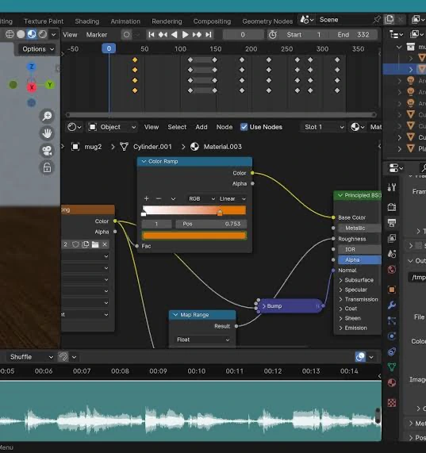
Blender · Shader Editor (opens in a new tab)
How visible links reveal the relationship between processing steps.
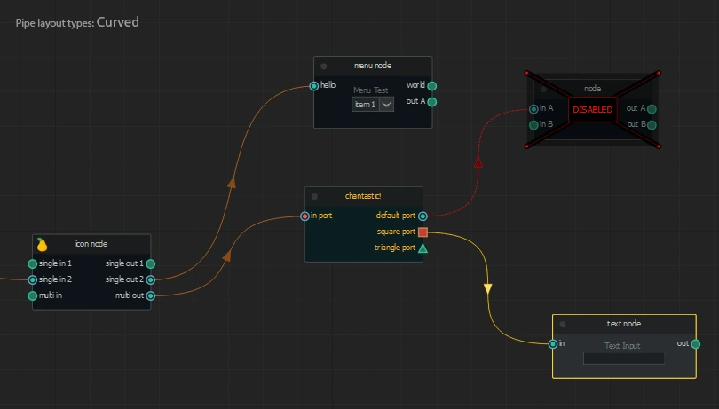
NodeGraphQt (opens in a new tab)
How input and output ports make connection points explicit.
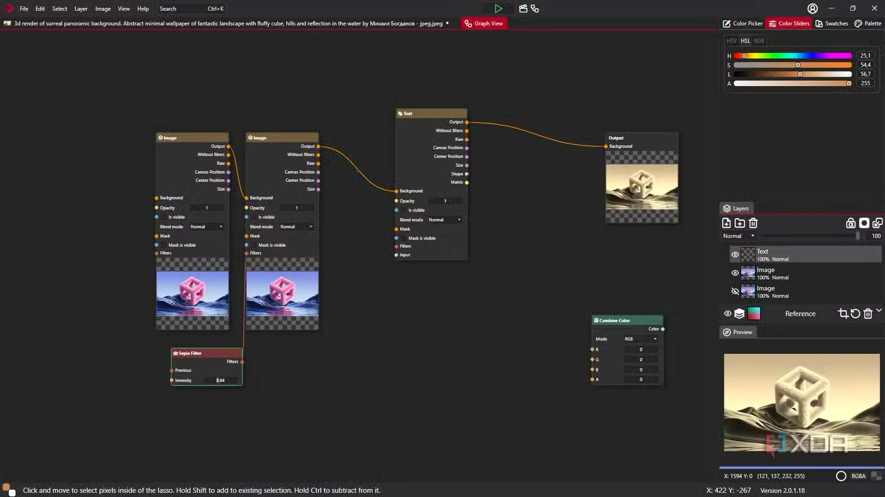
PixiEditor · Graph View (opens in a new tab)
How inputs, outputs and previews stay close to the graph.
What I adapted for Vision: a visible pipeline, predefined components and configuration in context.
Reference screenshots: Blender, NodeGraphQt and PixiEditor. © their respective owners.
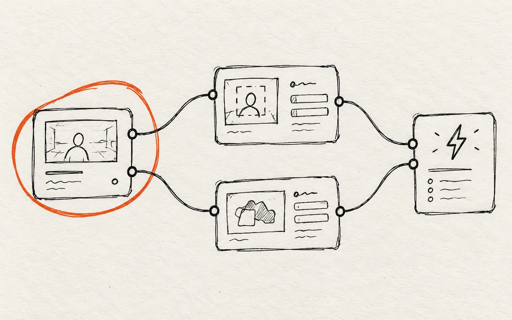
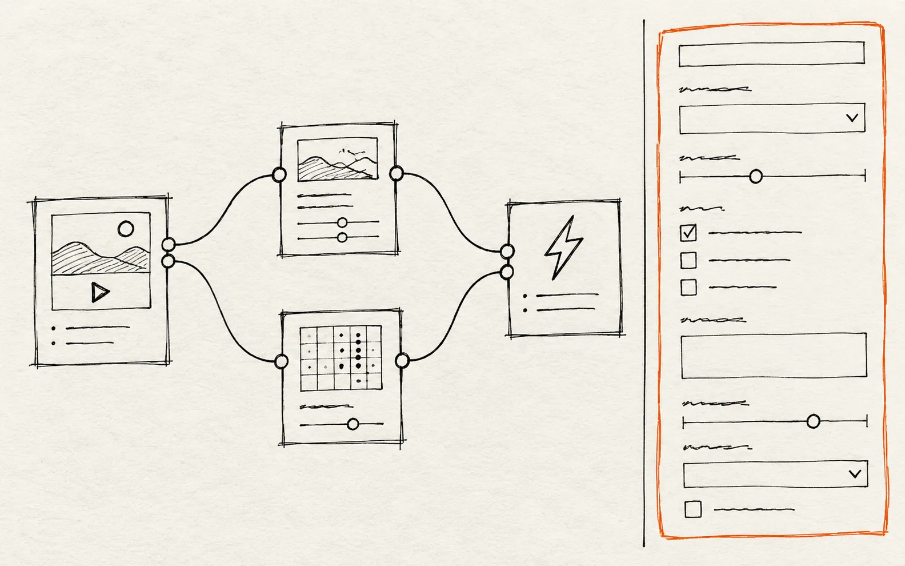
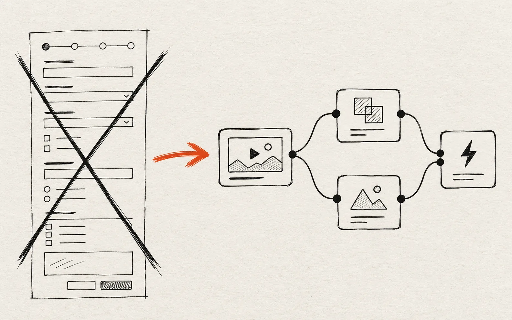
Solution
The canvas sits inside a four-step setup: General Information, Video Input, Stream Processors and Custom Fields. It makes the processing pipeline visible while retaining a guided path through the wider task.
The graph makes relationships visible, but it introduces a new interaction model. Keeping it inside the setup flow gives the canvas a defined place in the task. Next, I would test whether first-time users can connect nodes without help.
Retrospective comparison of trade-offs. The canvas-only alternative is hypothetical; these approaches were not compared in user testing.
Design decision / 01
Selecting a node opens its settings beside the graph. Buffer size, recording options and trigger types stay available without leaving the pipeline.
The trade-off is space: the inspector competes with the canvas. That became a concrete issue in developer review.
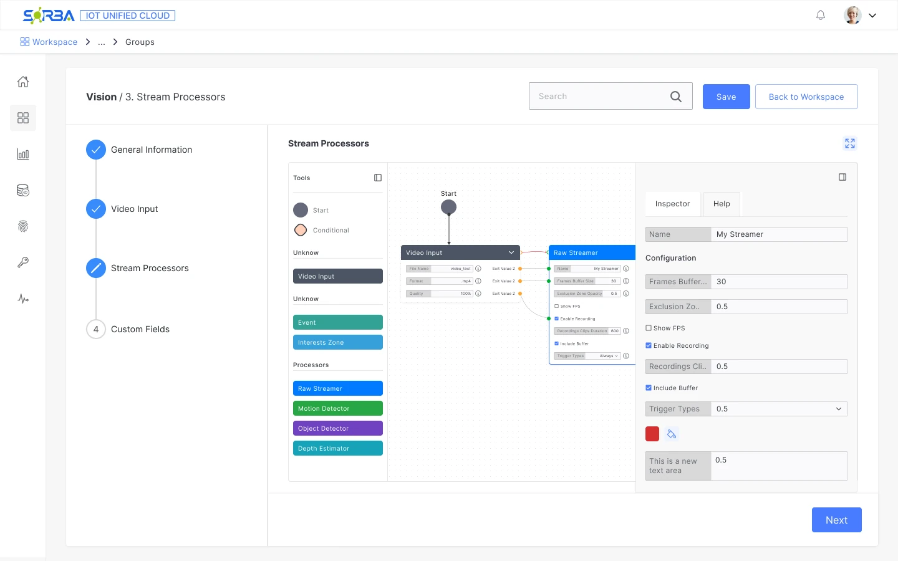
Design decision / 02
The Interests Zone editor lets users draw masks over the camera image and manage them alongside the node configuration.
The image gives the mask a spatial reference. Whether people can draw, revise and interpret those areas accurately still needs a task-based test.
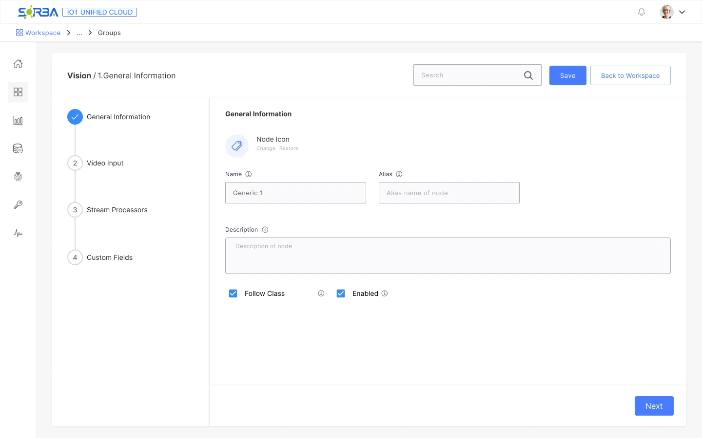
Keep the wider task guided
Four steps frame the canvas as one stage of setup, with the current stage visible.
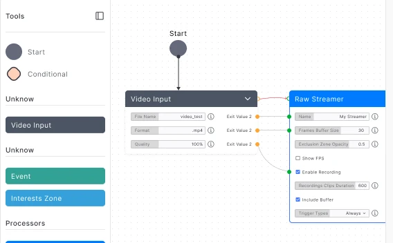
Make processing tools identifiable
Inputs, events and processors are grouped by type in a palette beside the canvas.
Iteration
I did not have access to end users for usability testing. I worked with developers through a loop of design, implementation, feedback and revision. Their feedback helped refine the interaction and what the team could build.
Explore interactions and map the configuration flow.
Work with developers to implement the flow.
Review the working interface and technical constraints.
Revise the design and repeat the loop.
ITERATION 1
Raised
The developers found the embedded canvas too cramped.
Changed
I added a way to maximize the canvas to full screen.


ITERATION 2
Raised
The interface needed to display two related forms at once.
Changed
I placed the forms side by side and added a close control to the second one. I checked feasibility with the developers before committing to the layout.
Outcome & next steps
Vision launched after four months. Sales and support, who worked directly with clients, relayed positive feedback. Support reported good customer acceptance and said Vision was one of the products the team was promoting most actively.
Next, I would complement that qualitative feedback with measures of setup completion, errors and requests for help.
4
months to launch
5
camera sub-steps in the earlier wizard
Proposed validation. I would first learn who configures Vision and how often, then observe representative setup tasks.
Ask someone to connect a video source and predefined processors. Observe completion, incorrect connections and requests for help; compare with the previous wizard where feasible.
Ask them to find a node’s inspector and change a setting. Check whether they can explain which part of the pipeline they changed.
Ask them to edit an Interests Zone with related forms open. Watch whether they find the maximize and close controls, and where space still gets in the way.
Reflection
Bring users into the process earlier. Developer feedback helped refine feasibility, but user sessions are needed to understand whether the canvas works for people without a technical background.
This was my first project with nodes and graphs. Studying other tools helped me see how a canvas could make relationships and configuration visible in a web product.